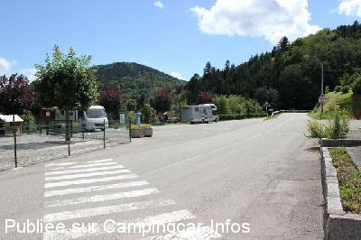

ASN = Aire de services avec stationnement nuit possible de :
BOURBACH LE HAUT
(N° 496)
Accès/adresse :
7 Route Joffre
68290 BOURBACH LE HAUT
68290 BOURBACH LE HAUT
Latitude : (Nord) 47.79463° Décimaux ou 47° 47′ 40′′
Longitude : (Est) 7.02868° Décimaux ou 7° 1′ 43′′
Tarif : 2013
Stationnement : 6 €
Services gratuits
Type de borne : FLOT BLEU
Services :


Autres informations :
Ouverte du 15/03 au 15/11
10 emplacements
Tél : +33 (0) 389 824 126

Le 21/07/2012 par iron

Le 21/07/2012 par iron
Le 29/09/2011 par BourbachleHaut
Le 18/08/2006 par Christophe
Le 25/09/2005 par Julius
de
NAPIOT
le 07/10/2014 :
Bonjour,
Parking petit et assez mal situé au bord d'une petite route et à côté de la maternelle donc le matin très bruyant avec en plus des cars de ramassage qui laissent tourner les moteurs
Dépôt de pain le matin sauf mercredi au restaurant à côté de 8 h à 9h
Possibilité de s'installer à peine un peu plus loin 100 mètres plus au calme à côté de l'aire de jeu mais sans l'électricité
Pour monter petite route de montagne jolie mais croisements difficiles
Bonjour,
Parking petit et assez mal situé au bord d'une petite route et à côté de la maternelle donc le matin très bruyant avec en plus des cars de ramassage qui laissent tourner les moteurs
Dépôt de pain le matin sauf mercredi au restaurant à côté de 8 h à 9h
Possibilité de s'installer à peine un peu plus loin 100 mètres plus au calme à côté de l'aire de jeu mais sans l'électricité
Pour monter petite route de montagne jolie mais croisements difficiles
de
fraysse
le 12/05/2014 :
De passage en avril 2014 nous y avons passé de nuits totalement gratuit avec électricité ,jolie vue sur la vallée ,un peu de bruit le matin a partir de 6h30 petite route a coté,pas trop loin de Mulhouse idéal pour visiter. merci a la municipalité
De passage en avril 2014 nous y avons passé de nuits totalement gratuit avec électricité ,jolie vue sur la vallée ,un peu de bruit le matin a partir de 6h30 petite route a coté,pas trop loin de Mulhouse idéal pour visiter. merci a la municipalité
de
Régie des gîtes de Bourbach-le-Haut
le 29/09/2011 :
Bonjour, vous trouverez ci-dessous le mot d'accueil de la commune de Bourbach-le-Haut. Cordialement. Régie des gîtes de Bourbach-le-Haut
"Chers visiteurs et camping-caristes,
Soyez les bienvenus à Bourbach-le-Haut.
Voici quelques consignes que nous vous demandons de bien vouloir appliquer quant à l'utilisation de la borne « Flot Bleu » qui est mise à votre disposition.
Dans un souci d'écologie, nous vous demandons de ne pas gaspiller l'eau par exemple pour laver votre véhicule. En effet, Bourbach-le-Haut n'a qu'un seul château d'eau à sa disposition pour ses habitants et ses visiteurs.
Le tarif forfaitaire journalier est de 5€. Il comprend un droit au parking et l'utilisation de la borne : emplacement, fourniture d'eau et d'électricité, traitement des eaux usées et collecte des ordures.
Un agent se présentera à vous afin de collecter cette somme. Nous vous remercions de lui réserver bon accueil.
Nous vous souhaitons un agréable séjour à Bourbach-le-Haut."
Bonjour, vous trouverez ci-dessous le mot d'accueil de la commune de Bourbach-le-Haut. Cordialement. Régie des gîtes de Bourbach-le-Haut
"Chers visiteurs et camping-caristes,
Soyez les bienvenus à Bourbach-le-Haut.
Voici quelques consignes que nous vous demandons de bien vouloir appliquer quant à l'utilisation de la borne « Flot Bleu » qui est mise à votre disposition.
Dans un souci d'écologie, nous vous demandons de ne pas gaspiller l'eau par exemple pour laver votre véhicule. En effet, Bourbach-le-Haut n'a qu'un seul château d'eau à sa disposition pour ses habitants et ses visiteurs.
Le tarif forfaitaire journalier est de 5€. Il comprend un droit au parking et l'utilisation de la borne : emplacement, fourniture d'eau et d'électricité, traitement des eaux usées et collecte des ordures.
Un agent se présentera à vous afin de collecter cette somme. Nous vous remercions de lui réserver bon accueil.
Nous vous souhaitons un agréable séjour à Bourbach-le-Haut."
de
Les Bretons
le 22/07/2011 :
Bonjour !
ceci pour vous signaler, contrairement à vos infos qu'il y a un branchement électrique à une borne "Flot Bleu" sur l'aire de stationnement.
D'autre part, nous ne trouvons pas rébarbatif de payer 5 euros à une petite commune comme Bourbach le Haut, puisque le prix des poubelles et de l'eau a fortement augmenté ces dernières années comme nous l'a simplement expliqué l'agent de collecte, au demeurant très sympathique.
Il faut aider les petites communes qui ont peu de revenus. Nous y avons passé un séjour très agréable.
Bonjour !
ceci pour vous signaler, contrairement à vos infos qu'il y a un branchement électrique à une borne "Flot Bleu" sur l'aire de stationnement.
D'autre part, nous ne trouvons pas rébarbatif de payer 5 euros à une petite commune comme Bourbach le Haut, puisque le prix des poubelles et de l'eau a fortement augmenté ces dernières années comme nous l'a simplement expliqué l'agent de collecte, au demeurant très sympathique.
Il faut aider les petites communes qui ont peu de revenus. Nous y avons passé un séjour très agréable.
de
fefe
le 14/08/2007 :
borne flot bleu gratuite avec 4 ou 5 places associées, sinon un prk est possible quelques metres plus loin!
Route etroite depuis Thann, pain le matin au restau a côté entre 8 et 9 H.
borne flot bleu gratuite avec 4 ou 5 places associées, sinon un prk est possible quelques metres plus loin!
Route etroite depuis Thann, pain le matin au restau a côté entre 8 et 9 H.
de
Christophe
le 18/08/2006 :
Pas évident à atteindre depuis Thann mais 100 fois plus agréable, n'arrivez pas trop tard les places sont limitées!
Pas évident à atteindre depuis Thann mais 100 fois plus agréable, n'arrivez pas trop tard les places sont limitées!
de
Guido ON7CI
le 18/06/2006 :
I confirm previous comments. We were there end of May 2006. Please park correctly because when the school opens in the morning there is a lot of cars trying to park next to you. And yes, it is all free but I could not open the water faucet.
I confirm previous comments. We were there end of May 2006. Please park correctly because when the school opens in the morning there is a lot of cars trying to park next to you. And yes, it is all free but I could not open the water faucet.
de
Julius
le 25/09/2005 :
Coin superbe. Idéal pour les promenades à pied ou en VTT dans la région. La borne est entièrement gratuite maintenant: Eau, vidange et l'électricité. Pour l'électricité il faut simplement pousser sur le bouton toutes les 30 minutes, ceci est suffisant pour recharger vos batteries. Pour plus de calme, et afin de ne pas déranger les petits de la maternelle, une beau parking est prévu à quelques mètres avec quelques tables de Pique-nique ainsi qu'une station de recyclage. Le Pain toujours Ok, sauf le mercredi, au resto du village entre 8 et 9 heures du matin.
Coin superbe. Idéal pour les promenades à pied ou en VTT dans la région. La borne est entièrement gratuite maintenant: Eau, vidange et l'électricité. Pour l'électricité il faut simplement pousser sur le bouton toutes les 30 minutes, ceci est suffisant pour recharger vos batteries. Pour plus de calme, et afin de ne pas déranger les petits de la maternelle, une beau parking est prévu à quelques mètres avec quelques tables de Pique-nique ainsi qu'une station de recyclage. Le Pain toujours Ok, sauf le mercredi, au resto du village entre 8 et 9 heures du matin.
de
le 31/07/2004 :
Joli petit coin d'Alsace , mais manoeuvre parfois difficile voir impossible quand les voitures stationnent surtout les wek-end.Endroit pourtant à visiter.
Joli petit coin d'Alsace , mais manoeuvre parfois difficile voir impossible quand les voitures stationnent surtout les wek-end.Endroit pourtant à visiter.
de
Nomade 59
le 14/06/2004 :
4 à 5 places autour de la borne de services (maintenant gratuite) et 6 à 8 places sur un parking à 50m. Village calme et belle vue. La route proche est peu passante la nuit. Pain chaque matin (sauf mercredi) au petit restaurant de la place qui possède une charmante terrasse sous les tilleuls.
4 à 5 places autour de la borne de services (maintenant gratuite) et 6 à 8 places sur un parking à 50m. Village calme et belle vue. La route proche est peu passante la nuit. Pain chaque matin (sauf mercredi) au petit restaurant de la place qui possède une charmante terrasse sous les tilleuls.
de
Christian59
le 18/05/2002 :
Belle commune et bien joli coin entre Alsace et Vosges.
Le parking est petit, manoeuvre facile cependant. Pas idéal pour le soir mais TB pour l'étape technique à condition d'avoir les 3 pièces de 50 cents pour l'eau propre.
Belle commune et bien joli coin entre Alsace et Vosges.
Le parking est petit, manoeuvre facile cependant. Pas idéal pour le soir mais TB pour l'étape technique à condition d'avoir les 3 pièces de 50 cents pour l'eau propre.